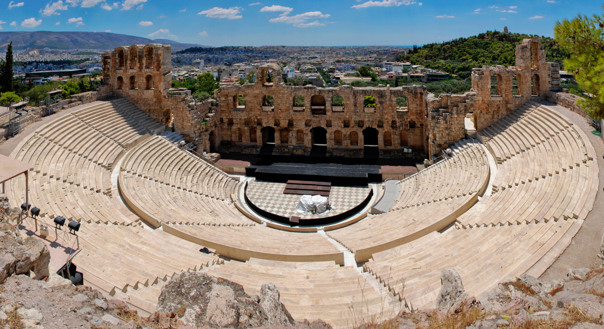

1. The Acropolis & Odeon of Herodes Atticus, Athens
High above Athens, the Acropolis is topped by the Parthenon, a temple built for the goddess Athena in the 5th century BC. On its slope sits the Odeon of Herodes Atticus, a Roman theatre from 161 AD that still hosts concerts under the stars. It is a UNESCO World Heritage Site, so visit early to beat the heat and the crowds.
📍 Athens🕰️ History